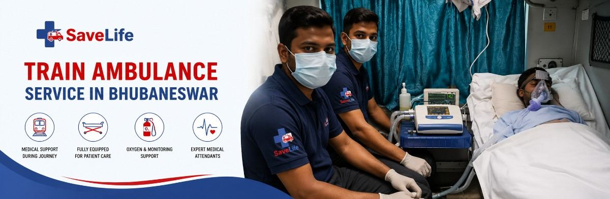

When a loved one needs to travel hundreds of kilometers for treatment, the road ahead can feel impossible. A regular ambulance can't cover that distance safely. A flight isn't always available, and it isn't always affordable. That's the gap Save Life Wellness fills.
We run ICU-equipped train ambulance services from Bhubaneswar to any city in India — Delhi, Mumbai, Chennai, Hyderabad, Kolkata, Bangalore, Vellore, and beyond. Every transfer is planned bed-to-bed, staffed by trained medical professionals, and monitored from the moment we pick up your patient to the moment we hand them over at the destination hospital.
If you're searching for a safer, calmer way to move a critically ill patient across the country, you've found it. Call us now at 9031200544 — we're available 24/7.
A train ambulance is a fully equipped ICU setup built inside a reserved railway coach or cabin, designed to transport patients over long distances without interrupting their medical care. Instead of a stretcher and a siren, think of it as a moving critical care unit — complete with a doctor, paramedic staff, and life-support equipment — that happens to travel on rails.
Why does this matter? Because for journeys beyond 500–600 km, road ambulances become risky and exhausting for the patient, and air ambulances, while fast, come at a price that most families simply cannot absorb during an already difficult time. A train ambulance sits in the middle — clinically safe, financially sensible, and far more comfortable for patients who need to lie flat, stay connected to monitors, or travel for many hours at a stretch.
Families typically turn to our train ambulance service in Bhubaneswar for situations like:
Whatever the reason, our job is the same: to make sure the journey never becomes a second emergency.
We don't just book a train seat and call it an ambulance. Every Save Life Wellness train ambulance is a purpose-built mobile ICU, assembled fresh for each patient based on their exact medical condition.
Our reserved coach is converted into a working intensive care unit before the patient ever boards. This includes a ventilator for patients on respiratory support, a multi-parameter cardiac monitor to track heart rate, ECG, blood pressure, and oxygen saturation continuously, a steady oxygen supply with backup cylinders, and infusion pumps for controlled delivery of IV fluids and medication. Every piece of equipment is tested and functioning before departure — nothing is assembled on the fly.
A transfer is only as safe as the team running it. Depending on the patient's condition, we deploy a critical care doctor, trained paramedics, and nursing staff who stay with the patient for the entire journey — not just at pickup and drop-off. They monitor vitals, administer medication on schedule, and are trained to respond immediately if the patient's condition changes mid-route.
Not every patient fits the standard setup. For patients with infectious conditions who need to travel in isolation, or bariatric patients who require extra space and specialized handling equipment, we arrange the appropriate coach configuration in advance — so the journey is safe and dignified, regardless of the patient's specific needs.
We've simplified what could otherwise be a stressful, confusing process into four clear steps.
It starts with a phone call to 9031200544. Our team gathers the patient's current medical condition, the equipment they're on (ventilator, oxygen, monitors), the origin and destination, and the preferred travel date. This assessment decides exactly what kind of ICU setup and staffing the journey needs.
Once we understand the medical requirement, our team coordinates directly with railway authorities to secure the right coach or cabin — whether that's a full reserved cabin for ICU setup or a private compartment suited to the patient's condition. We handle the paperwork and railway liaison so your family doesn't have to.
The train is only one leg of the journey. We arrange a road ambulance to move the patient from their current hospital to the railway station in Bhubaneswar, and a connecting ambulance at the destination city to take them straight to the receiving hospital or home. It's a seamless bed-to-bed transfer, not a series of disconnected handoffs.
Throughout the journey, our medical team continuously monitors the patient's vitals, manages medication timing, and stays alert for any change in condition. On arrival, we provide a full handover — medical notes, vitals log, and verbal briefing — to the receiving doctor or family, so continuity of care is never broken.
We regularly manage long-distance train ambulance transfers on the following routes. Approximate transit times are shared as a general guide — actual timing depends on train schedules and patient condition.
| Route | Approx. Distance | Approx. Transit Time |
|---|---|---|
| Bhubaneswar → Delhi | ~1723 KM | 24-28 hours |
| Bhubaneswar → Mumbai | ~1619 KM | 26–30 hours |
| Bhubaneswar → Chennai | ~1236 KM | 18-22 hours |
| Bhubaneswar → Hyderabad | ~1000 KM | 16-20 hours |
| Bhubaneswar → Kolkata | ~442 KM | 06-08 hours |
| Bhubaneswar → Bangalore | ~1455 KM | 24–28 hours |
| Bhubaneswar → Vellore (CMC) | ~1301 KM | 20–24 hours |
Don't see your destination listed? We arrange train ambulance transfers to virtually any city connected by rail. Call 9031200544 and tell us where you need to go.
This is the question every family asks, and the honest answer is: it depends on the patient's condition, the urgency, and the budget. Here's how the two compare, so you can make an informed decision without guesswork.
Cost. An air ambulance can cost several times more than a train ambulance covering the same route — often the difference between a few lakhs and a fraction of that. For most non-hyperacute transfers, a train ambulance delivers equivalent medical safety at a much lower cost.
Time. Air ambulances are undeniably faster for extremely long distances or when every hour counts — such as organ transplant transfers or acute trauma requiring immediate specialist intervention. Train ambulances take longer but remain entirely manageable for stable-but-critical patients who are on monitored life support.
When train ambulance makes sense. If your patient is stable enough to be monitored (even on ventilator or oxygen support) but doesn't require emergency intervention within hours, a train ambulance offers a smoother ride, more onboard space, less turbulence-related risk, and dramatically lower cost.
When air ambulance makes sense. For hyperacute emergencies, organ transport, or cases where every minute genuinely matters, air transfer is worth the cost.
Not sure which applies to your situation? Call us at 9031200544 — our medical team will assess the case honestly and recommend what's actually right for the patient, not just what's more profitable for us.
We believe families in crisis shouldn't also have to navigate unclear pricing. While the exact cost depends on a few factors, here's what genuinely influences the price of your transfer:
We provide a clear, itemized quote before you commit to anything — no hidden charges added after the journey begins. If your patient has health insurance, our team can also help you understand what documentation is typically needed for reimbursement claims, so you're not left managing paperwork alone during an already overwhelming time.
Call 9031200544 for a straightforward cost estimate based on your specific case.
There's no shortage of ambulance providers listing similar services. Here's what actually sets our approach apart.
Every train ambulance journey we run follows strict clinical protocols, not improvised care:
Safety isn't a marketing line for us — it's the actual standard our medical team is trained to follow on every single transfer.
Save Life Wellness is based near Manipal Hospital, Satyasai Enclave Road, Khandagiri, Bhubaneswar, Shankarpur, Odisha 751030 — giving us quick access across the city and its surrounding areas. We regularly coordinate pickups from and around:
Khandagiri, Patia, Chandrasekharpur, Nayapalli, Saheed Nagar, Old Town, Jaydev Vihar, Rasulgarh, Kalinga Nagar, Sundarpada, and other neighborhoods across Bhubaneswar — along with coordination for patients referred from major hospitals throughout the city.
Wherever you're calling from in Bhubaneswar, our team can reach you and begin planning the transfer immediately.
Cost depends on the destination, the type of medical setup required (ICU vs. basic), and staffing needs. We provide a clear, itemized estimate after understanding your patient's condition — call 9031200544 for a quote specific to your case.
We first transfer the patient from their current hospital to the railway station using a road ambulance. Our team then coordinates with railway staff to board the patient directly into the reserved ICU coach, minimizing movement and discomfort.
For patients requiring intensive monitoring or ventilator support, a critical care doctor accompanies the transfer. For more stable cases, trained paramedics and nursing staff manage the journey, with a doctor on-call for consultation.
We recommend booking as early as possible once travel is confirmed, since railway coach coordination takes time. That said, we understand emergencies don't always allow advance notice — call us and we'll do everything possible to arrange the fastest available option.
Air ambulance is faster and better suited to hyperacute emergencies, but costs significantly more. Train ambulance offers the same level of onboard medical care for stable-but-critical patients at a fraction of the cost, with more space and a smoother ride for longer journeys.
Yes. Our ICU-configured coaches include ventilators, continuous oxygen supply with backup cylinders, cardiac monitors, and infusion pumps — set up based on the patient's specific medical needs before departure.
Every hour spent uncertain is an hour your patient doesn't need to wait. Save Life Wellness is ready to assess your case, explain your options honestly, and get your loved one moving safely — the moment you call.